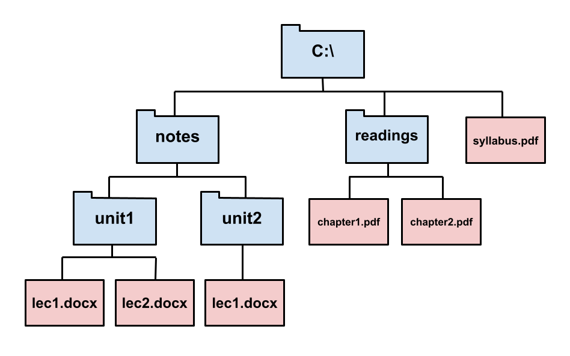

Lab 0: Getting Started (Windows Setup)
Setup
Terminal
PowerShell:
The terminal is a program that allows you to interact with your computer by entering commands.
You already have a program called Windows PowerShell. Open that up and you should be good to go.
[OPTIONAL ALTERNATIVE] Git Bash:
You can also try and download a terminal called Git Bash, which has some more utilities than PowerShell and may be required for future courses.
You should be able to install Git Bash with most of the default configuration options, with one exception. In the Configuring the terminal emulator to use with Git Bash step, select the second option: Use Windows' default console window.
This is very important! If you do not select this option, your Git Bash terminal will not work!

Python
Python 3 is the primary programming language used in this course. If you have an older version of Python installed,
please make sure to download and install Python 3.11. You can check your Python
version with the command python3 ––version.
If you'll be using PowerShell, open the Microsoft Store and search for "Python." Install Python 3.11 by the Python Software Foundation (this should be the first result).
Verify: We can use the terminal to check if your Python interpreter was installed correctly. Try the following command:
python3 ––versionIf the installation worked, you should see some text that says "Python 3.XX.XX." Be sure that the version is listed as Python 3.8 or later.
If thepython3 --versioncommand doesn't work, first try closing and reopening your terminal. If that doesn't work, try usingpython --versionorpy --versioninstead.
Text Editor
The Python interpreter that you just installed allows you to run Python code. You will also need a text editor, where you will write Python code.
Visual Studio Code (VS Code) is the most popular choice among the staff for this course for writing Python.
We highly recommend using VS Code for this class. This will help us support you best since most of staff uses VS Code. Please do not use word processors such as Microsoft Word to edit programs. Word processors can add extra content to documents that will confuse the interpreter.
You can open a terminal directly on VS Code. Thus, when running terminal commands, you can manage everything in VS Code rather than navigating back and forth between VS Code and a separate
terminal application. You can open an embedded terminal by going to
Terminal > New Terminal in VS Code's navigation bar.

Other Text Editors
For your reference, we've written some guides on other popular text editors:
Some students also use:
- PyCharm: A desktop editor designed for Python.
Pair Programming
Throughout this course, you'll have many chances to collaboratively code in labs and projects. We recommend you download these pair programming extensions now to use in the future.
For sharing code, you can follow the instructions for your editor:
Walkthroughs & Reviews
Review: Your Computer's File System
Your computer stores files. Each file is contained in a directory (also called a folder). Directories may also be contained in other directories. All the files and directories on your computer form a hierarchical, tree-like structure. Here's an example of what that could look like.

On this computer, for example, we can see that the C:\ directory contains another directory called
readings, which contains two files: chapter1.pdf and chapter2.pdf.
Just like how in real life we have addresses so that we can locate buildings, computers use paths
to locate files. For example, C:\readings\chapter1.pdf is a path that references a particular file
on your computer: the file chapter1.pdf, which is contained in the folder readings, which is
contained in the folder C:\.
C:\readings\chapter1.pdf is an example of what we call an absolute path because it uniquely
identifies a specific file or folder within the computer. The other kind of path is a
relative path, which identifies a location on the computer relative to some working directory.
For example, if the working directory is C:\notes\, then the relative path unit1\lec1.docx refers to
the lec1.docx file contained in the folder unit1 contained in the folder notes contained in C:\.
You can think of a relative path as a series of steps you take starting at the working directory to
get to some other location in the computer.
In Windows, you can tell absolute paths apart from relative paths because absolute paths begin with a
letter and a colon (C:\syllabus.pdf), while relative paths never do.
(There can also be paths that start with a backslash \, but they are beyond the scope of this
course. You should never use a path starting with a backslash in this course.)
The meaning of a relative path changes depending on what the working directory is.
For example, the path lec1.docx references a different file if the working directory is
C:\notes\unit1\ than if the working directory is C:\notes\unit2\. If the working directory
is C:\readings\, on the other hand, the path lec1.docx is meaningless, because there is no file
named lec1.docx contained in the C:\readings\ folder.
Walkthrough: Using the Terminal
The terminal is a program that allows you to interact with your computer by entering commands.
Open up your terminal. You will see some text stating the name of your
terminal, followed by a terminal prompt, a character
that tells you that the terminal is ready to accept inputs. The prompt is usually > if you are on Windows.

Working Directory and Home Directory
Your terminal is always open in some folder, also known as the terminal's working directory.
The path to the working directory is visible next to PS in PowerShell. In the above screenshot of PowerShell, the working directory is C:\Users\adity.
When you first open your terminal, you will start in the "home directory." This is the default working directory for your terminal.
Commands
There are many different commands that you can use.
The command you will use most in this class is python3, which tells the computer
to run the Python interpreter. Try it out:
python3You should see some text printed out about the
interpreter followed by >>> on its own line. This is where you can type in Python
code. Try typing some expressions you saw in lecture, or just play around to see
what happens! You can type exit() or Control-Z and press enter to return to the command line.
Ifpython3doesn't work, try usingpythonorpyinstead.
You can also run Python code stored in a file by entering python3 <path>,
where python3 command when you
complete the lab.
Terminal vs Python Interpreter
Let's pause and think about the difference between the terminal and the Python interpreter.

- Which is the terminal?
- Which one is the Python interpreter?
- Which one is my code editor?
- And how can you tell?
Both A and D are my terminal. This is where you can run commands like python3. D is the terminal that is built-in to VS Code.
B is the Python interpreter. You can tell because of the >>> prompt that means you've started a Python interpreter. You can also tell because the command that started it is visible: python3. The python3 command launches a Python interpreter. If you type an ordinary command into the Python interpreter, you'll probably get a syntax error! Here's an example:

C is my code editor. This is where I can write Python code to be executed via my terminal.
Walkthrough: Organizing Your Files
In this section, you will learn how to manage files using terminal commands. Start by opening your terminal.
Make sure your prompt does not begin with
>>>. If it begins with>>>you are still in a Python interpreter, and you need to exit. See above for how.
Directories
The first command you'll use is ls. Try typing it in your terminal:
lsThe ls command (which stands for list) lists all the files and folders in the current working directory.
Recall that "directory" is another name for a folder (such as the Documents folder).
Since your working directory is the home directory right now, after you type ls you should see the contents of your home directory. In Powershell, you can tell directories apart from
files because files have a length listed, while directories do not.
CLI vs GUI
Remember that you can access the files and directories (folders) on your computer in two different ways. You can either use the terminal (which is a command line interface, or CLI) or you can use File Explorer. File Explorer is an example of a graphical user interface (GUI). The techniques for navigating are different, but the files are the same. For example, here's how my folder for this course looks in my GUI:
And here's how the exact same folder looks in Powershell:
The contents of the folder can be found listed in the GUI, and underneath the yellow ls command in PowerShell
Changing Directories
To move into another directory, use the cd command (which stands for change
directory). cd takes in a path as input and changes the working directory
of your terminal to be directory identified by that path.
Let's try moving into your Desktop directory.
First, make sure you're in your home directory by typing:
cd ~
~is a special shorthand way of referring to the home directory. It is a path to the home directory.
Then, use the ls command to see if the Desktop directory is present.
If you see the Desktop directory, you can move into it with the following command:
cd DesktopHowever, if the Desktop directory is not listed, it might be located elsewhere on your
system.
This can happen due to system configurations or custom setups.
Find your Desktop in your file explorer and open it. Right click on the "address bar"
at the top of the window and click "Copy Address".
The absolute path to your Desktop (e.g. C:\Users\adity\OneDrive\Desktop\)
is now copied to your clipboard. Enter cd <absolute path to desktop> into the terminal
to change directories into the Desktop.
Making New Directories
Once you're in the Desktop directory, the next command you'll use is mkdir, which
stands for make a new directory. mkdir takes in a name as input and creates
a new directory with that name. The new directory is stored in the current working directory.
Let's make a directory called c88c in your Desktop directory to store all of the assignments for this class:
mkdir c88cA folder named c88c will appear on your Desktop.
You can verify this by using the ls command again or by checking your Desktop using File Explorer.
Now, let's create some more directories. First, make sure you are in the c88c directory,
which should have an absolute path like C:\Users\<USER>\Desktop\c88c where <USER> is your actual username.
Then, create three new folders called projects, lab, and hw. All of them should be inside your c88c folder:
cd c88c
mkdir projects
mkdir lab
mkdir hwNow if you list the contents of the directory (using ls), you'll see three
folders, projects, lab, and hw.
More Directory Changing
cd ..(two dots). The..means "the parent directory", or one directory above your current directory.
You do not have to keep your files on your Desktop if you prefer otherwise. Where you keep your files locally will not affect your grade. Do whatever is easiest and most convenient for you!
Downloading the Assignment
If you haven't already, download the zip archive, lab00.zip, which
contains all the files that you'll need for this lab. On most computers, lab00.zip will probably be located in a
directory called Downloads in your home directory.
You must expand the zip archive before you can work on the lab files. In File Explorer, you need to first click on the .zip file, then choose "Extract all". If you run into trouble, you can search online for how to unzip a file. Different operating systems and different browsers have different ways of unzipping.
You only need to unzip the files once.
Once you unzip lab00.zip, you'll have a new folder called lab00 which
contains the following files (check it out by using cd to navigate into the folder and
ls to list its contents):
lab00.py: The template file you'll be adding your code took: A program used to test and submit assignmentslab00.ok: A configuration file forok
Moving Files
Move the lab files to the lab folder you created earlier. We recommend
that you do this by dragging and dropping it into the correct folder in your graphic file
explorer. If you want to use your terminal to move the folder, use the mv command
as described in our UNIX Tutorial.
Summary
Here is a summary of the commands we just went over for your reference:
ls: lists all files in the current directorycd <path to directory>: change into the specified directorymkdir <directory name>: makes a new directory with the given name
The exams for this course will not test you on how the file system works, what the definition of an absolute path is, or what commands you use in the terminal. However, these skills are essential for completing all of the assignments in this course. You can reference this page in the future.
Finally, you are ready to start editing the lab files! Don't worry if this seems complicated—it will get much easier over time. Just keep practicing! You can also take a look at our UNIX tutorial for a more detailed explanation of terminal commands.